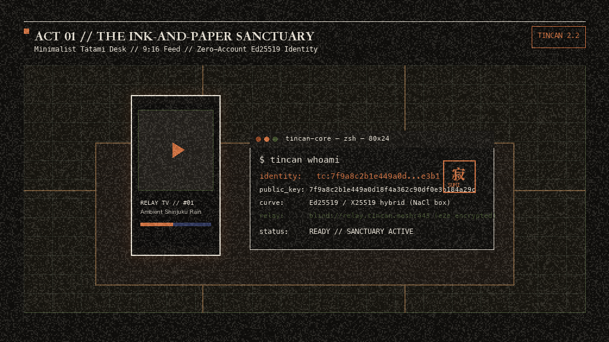
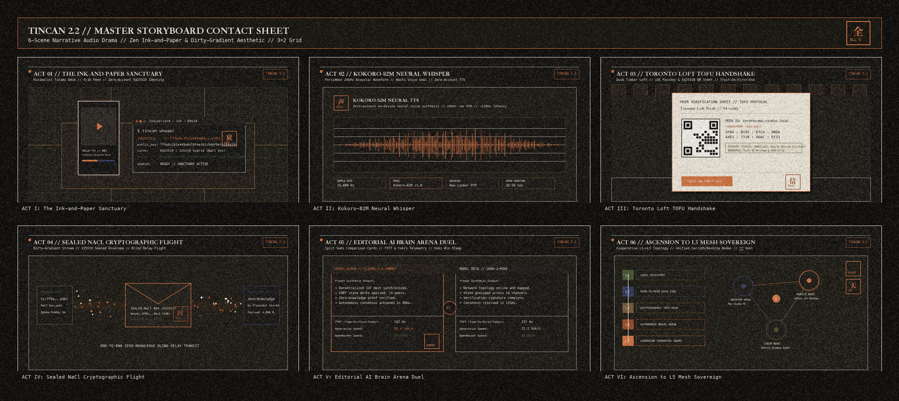

禅
TinCan 2.2 // Zen Storyboard & Narrative Drama
Sumi / Washi / Kaki Aesthetic // 6-Act Decentralized Audio Drama
PLAY MASTER VO
00:00
02:53

I. The Ink-and-Paper Sanctuary
CPL: Wide interior dusk. Minimalist tatami and cedar desk. 9:16 vertical video feed glow. Ed25519 identity seal.
寂
SCENE AUDIO:
panel_01_cyber_lab_crt_drama.wav
PLAY SCENE AUDIO
Narrative Scenes
6 ACTS
3×2 Master Storyboard Contact Sheet
